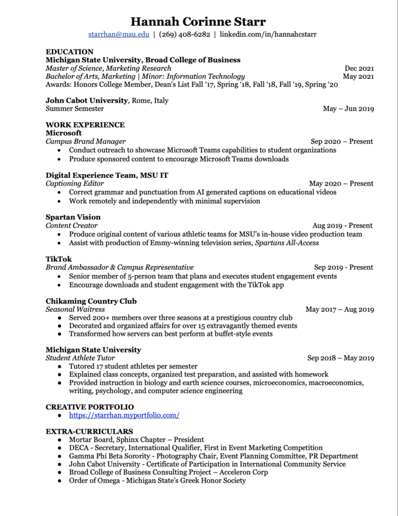

| Company | Length | Title |
|---|---|---|
| TikTok | 1.5 years | Campus Representative/Brand Ambassador |
| Microsoft | .5 years | Campus Brand Manager |
| MSU IT | .5 years | Captioning Freelancer |
| Tutor | 1 year | Student-Athlete Tutor |
| Spartan Vision | 1 year | Student Film Maker |
Hello there
Welcome, my name is Hannah Starr. Keep scrolling to find out more about my job history & educational background from my past 4 years at Michigan State University.
Resume
Videos
Click here to watch my most recent work.
I am well versed in Adobe Premiere Pro and Adobe After Effects. My favorite video categories are travel, vlog, and motivational. I often find inspiration in Nike's commercials.
Work History
Campus Involvements
In June 2019, I studied abroad and lived in Rome, Italy. Clubs that I have been a member of include Women in Business Student Organization, DECA (secretary), and Mortar Board (President). Greek life has allowed me to serve my community and has exposed me to leadership positions. I was on the Party Planning committee, Bid Day committee, Panhellenic Affairs committee, and served as the Photography chair. Also, I am a member of Order of Omega, MSU's Greek honor society. I have been a member of the Honors College since Spring 2018.
Plans for the Future
Starting Spring 2021, I will be dual-enrolled in MSU's Master's of Science in Marketing Research program, which is ranked #1 in the world. After graduating in December 2021, I will hopefully live in a big city with warm weather working as a consultant for a market research firm.